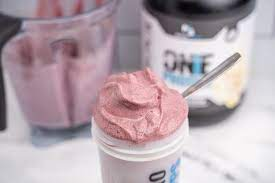

Anabolic Ice-cream

Description
The famous anabolic icecream from the Youtube fitness community is now at your
fingertips with this easy-to-use recipe. Made famous by Greg Doucette and perfected
by many Youtubers such as E4CM, Will Tennyson, Remington James, and the Iron Musket,
this recipe puts the Ninja Blender's impressive abilities to the test. The outcome
is a thick, decadent, and macro-friendly dessert with a fraction of the calories
in typical store-bought, run-of-the-mill shakes and ice creams.
Ingredients
- 200g of your milk of choice
- 1.5 scoops of vanilla protein powder
- 105g frozen strawberries
- 1 frozen banana
- 1/2 tsp of guar/xantham gum
- 150g of ice
Steps
- Add the milk, protein powder, strawberries, banana, guar/xantham gum, and ice
to the blender
- Blend on HIGH for 1 minute
- Remove the cover and scrape the sides of the blender with a spatula or other
clean utensil of your choice to help mix contents
- Repeat the blend-scrape cycles until a thick, homogeneous mixture is obtained
- Remove the blender blades
- Enjoy your ice cream straight from the blender!